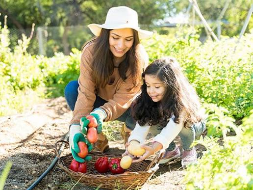

The Gardening Club gives students the opportunity to learn about plants, nature, and taking care of the school environment.
The purpose of the Gardening Club is to teach students about gardening and plants while encouraging teamwork and responsibility.
Advisor: Ms.Paradez and Ms. Gomez
Meeting Time:Wednesday
Location: Patio
Students should be interested in plants and gardening, participate responsibly, and follow school rules.
Students plant seeds and learn how plants begin to grow.
Students water plants, remove weeds, and help take care of the garden.
Students work on projects that help them learn more about plants and nature.